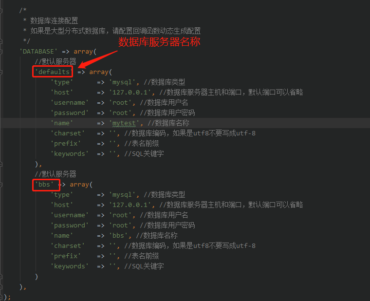

数据库配置
Ocara支持分布式数据库连接，支持读写分离。
1、 关于数据库服务器名
在数据库配置时，要给连接的服务器或者分布式服务器的主节点设置一个别名，统一称为数据库服务器名称。
默认的数据库服务器名为“main”。

2、 配置数据库
（1）实例一（默认数据库）
默认的数据库服务器名为main, 配置文件是database.php。
/*
* 数据库连接配置
* 如果是大型分布式数据库，请配置回调函数动态生成配置
*/
'DATABASE' => array(
//默认数据库
'main' => array(
'type' => 'mysql', //数据库类型
'host' => '127.0.0.1', //数据库服务器主机和端口，默认3306可以省略
'name' => 'myapp', //数据库名称
'username' => 'root', //数据库用户名
'password' => 'root', //数据库用户密码
'charset' => 'utf8', //数据库编码，如果是utf8不要写成utf-8
'prefix' => '', //表名前缀
'keywords' => '', //SQL关键字
'prepare' => false, //是否使用预处理，默认true
)
)
注：（1）端口一般要放在host后面的，但是默认的端口可以省略。
比如，如果是8807端口，就要将host写成'192.168.1.40:8807'了。
（2）如果表没有前缀，可保持为空不填；表名前缀后面一般以下划线“_”与表名连接，这里要带上下划线。
（3）如果编码是utf8格式，别忘了数据库编码utf8是没有中间的横杠"-"的
（4）keywords，表示会过滤掉的SQL关键字
（5）另有prepare选项，设置是否使用预处理，默认true
（6）另有isPdo选项，设置是否使用PDO，默认如果启用了PDO则true
（7）另有pconnect选项，设置是否使用长连接，默认false
（2）实例二
如下实例，假设我们要连接一台论坛服务器命名为“bbs”，默认数据库假设为mydb_bbs，没有前缀。
可以在database.php中新增以下配置：
'DATABASE' => array(
//默认数据库
'main' => array(
'type' => 'mysql', //数据库类型
'host' => '127.0.0.1', //数据库服务器主机和端口，默认3306可以省略
'name' => 'myapp', //数据库名称
'username' => 'root', //数据库用户名
'password' => 'root', //数据库用户密码
'charset' => 'utf8', //数据库编码，如果是utf8不要写成utf-8
'prefix' => '', //表名前缀
'keywords' => '', //SQL关键字
'prepare' => true, //是否使用预处理，默认是
),
//BBS数据库配置
'bbs' => array(
'type' => 'mysql', //数据库类型
'host' => '192.168.1.40', //数据库服务器主机和端口，默认3306可以省略
'default' => 'bbs_main', //默认数据库名称
'username' => 'mydb_bbs', //数据库用户名
'password' => 'mybbspass', //数据库用户密码
'charset' => 'utf8', //数据库编码，注意不是utf-8
'prefix' => '' //表名前缀
)
)
3、数据库读写分离
Ocara支持数据库读写分离。做法很简单，只要将配置中的host改成包含2个元素的数组形式，分别表示主数据库和从数据库。
如上例中的默认数据库也进行读写分离配置时，如下实例：
/*
* 数据库连接配置
* 如果是大型分布式数据库，请配置回调函数动态生成配置
*/
'DATABASE' => array(
//默认数据库
'main' => array(
'type' => 'mysql', //数据库类型
'host' => array(
'192.168.1.40',
'192.168.1.41:3307'
), //数据库服务器主机和端口，默认3306可以省略
'name' => 'myapp', //数据库名称
'username' => 'root', //数据库用户名
'password' => 'root', //数据库用户密码
'charset' => 'utf8', //数据库编码，如果是utf8不要写成utf-8
'prefix' => '', //表名前缀
'keywords' => '', //SQL关键字
)
)
配置读写分离后，查询数据库时都会使用从库，但是有时候可能不希望使用从库查询，可以使用Model的master()方法。
master()
如下示例：
$userModel = new \app\model\database\User();
$userModel->where(array('type' => 2))
->master() //规定使用主库查询
->getAll();
4、多数据库或分布式数据库配置
（1）直接配置法
用于比较简单的场景。复制一份默认数据库配置，修改键名并修改配置。请看上述实例。
（2）使用资源提供器
适合于大型分布式数据库系统配置，配置繁多并且复杂，有不确定性。
注：如果配置文件与资源提供器中重复设置了同一个连接配置，则优先使用后者。 |
这里简单的做个配置类，现实中可能会有很多复杂的数据库配置：
class DatabaseConfig extends Base
{
public static function get($server)
{
$database = array();
switch($server)
{
case 'bbs':
$config = array(
'type' => 'mysql', //数据库类型
'host' => '192.168.1.42', //数据库服务器主机
'default' => 'db_bbs', //默认数据库名称
'username' => 'mybbsdb', //数据库用户名
'password' => 'mybbspass', //数据库用户密码
'charset' => 'utf8', //数据库编码
'prefix' => 'dz_' //表前缀
);
break;
case 'blog':
$config = array(
'type' => 'mysql', //数据库类型
'host' => array(
'192.168.1.43',
'192.168.1.44:8890'
), //数据库服务器主机（读写分离）
'default' => 'db_blog', //默认数据库名称
'username' => 'myblogdb', //数据库用户名
'password' => 'myblogpass', //数据库用户密码
'charset' => 'utf8', //数据库编码
'prefix' => 'x_', //表前缀
);
break;
default :
$config = array(); //默认使用配置文件database中的
}
return $config;
}
}
然后，在resource.php配置文件中修改database的get_config选项：
/*
* 数据库相关
*/
'database' => array(
'get_config' => 'DatabaseConfig::get', //获取数据库配置
),
5、获取数据库连接配置
如果想获取数据库的连接配置，则使用DatabaseFactory的getConfig()方法。
它能获取通过配置文件或自定义回调中配置的数据库连接配置。格式如下：
getConfig(server)
参数说明：
| 名称 |
描述 |
| server |
可选。同上connect()。 |
实例如下；
$config = DatabaseFactory::getConfig('bbs');